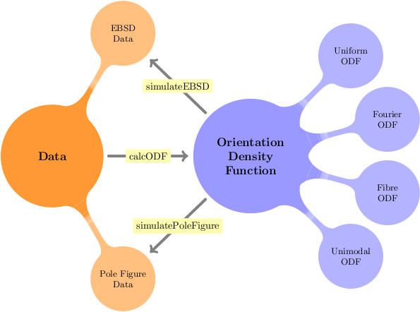

Simulating Data based on ODFs
How to create experimental data from an ODF
|
|
Pole Figure Simulation | Simulate arbitary pole figure data | |
|
|
EBSD Simulation | How to simulate an arbitary number of individual orientations data fromany ODF. | |
To analyse the relyability of the ODF estimation simulating data and estimate an ODF from these data again may be usefull. The estimated ODF compared to the original allows one to find best parameters for ODF estimation as well as for the experimental design.
